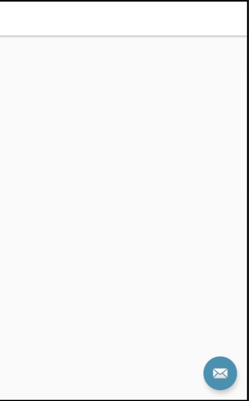
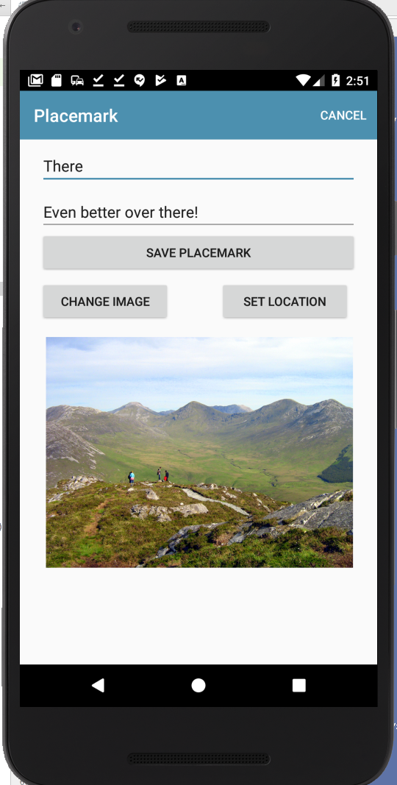

Objectives
Display all placemarks on a map in a new activity
Exercises
Exercise 1
Change back to using the PlacemarkMemStore instead of PlacemarkJSONStore. The only change you need to make should be in MainApp.
Try some experiments to make sure the persistence is working as expected:
- Using MemStore - create some placemarks and then kill the app. Relaunch, and verify that all placemarks are gone
- Using JsonStore - try the same experiment. This time the placemarks should persist between application terminations.
Exercise 1 Solution
To switch between the database and memory stores - it should be just a matter of commenting out one of the placemarks declarations:
Using Json
// placemarks = PlacemarkMemStore()
placemarks = PlacemarkJSONStore(applicationContext)Using memory:
placemarks = PlacemarkMemStore()
// placemarks = PlacemarkJSONStore(applicationContext)Exercise 2: PlacemarkJSONStore update method
Complete the implementation of the update method in the PlacemarkJSONStore class. Use the corresponding method in PlacemarkMemStore as a guide (and dont forget to save changes to the file).
Exercise 2 Solution:
PlacemarkJSONStore
override fun update(placemark: PlacemarkModel) {
val placemarksList = findAll() as ArrayList<PlacemarkModel>
var foundPlacemark: PlacemarkModel? = placemarksList.find { p -> p.id == placemark.id }
if (foundPlacemark != null) {
foundPlacemark.title = placemark.title
foundPlacemark.description = placemark.description
foundPlacemark.image = placemark.image
foundPlacemark.lat = placemark.lat
foundPlacemark.lng = placemark.lng
foundPlacemark.zoom = placemark.zoom
}
serialize()
}Exercise 3
Currently we have no way of deleting placemarks. To support delete, you will need to extend the PlacemarkStore to support removal of placemarks, and then implement this in PlacemarkMemStore and PlacemarkJSONStore These are the implementations you will need:
PlacemarkStore
fun delete(placemark: PlacemarkModel)Introduce this to PlacemarkStore now - and write implementations in PlacemarkMemStore and PlacemarkJSONStore classes :
PlacemarkMemStore
override fun delete(placemark: PlacemarkModel) {
placemarks.remove(placemark)
}PlacemaekJSONStore
override fun delete(placemark: PlacemarkModel) {
placemarks.remove(placemark)
serialize()
}To trigger the actual deletion introduce a new delete button alongside the cancel button on the PlacemarkActivity. Pressing this button should trigger the delete method.
Exercise 3 Solution
Make the above change to the model classes. Then, introduce the delete string resource + button:
strings.xml
<string name="menu_deletePlacemark">Delete</string>menu_placemark.xml
<?xml version="1.0" encoding="utf-8"?>
<menu xmlns:android="http://schemas.android.com/apk/res/android"
xmlns:app="http://schemas.android.com/apk/res-auto">
<item
android:id="@+id/item_delete"
android:title="@string/menu_deletePlacemark"
app:showAsAction="always"/>
<item
android:id="@+id/item_cancel"
android:title="@string/menu_cancelPlacemark"
app:showAsAction="always"/>
</menu>The menu event handler can then be extended to trigger delete:
PlacemarkActivity
override fun onOptionsItemSelected(item: MenuItem?): Boolean {
when (item?.itemId) {
R.id.item_delete -> {
app.placemarks.delete(placemark)
finish()
}
R.id.item_cancel -> {
finish()
}
}
return super.onOptionsItemSelected(item)
}Try this now and verify that to works as expected.
Finally - notice that the delete button is always visible - even if we are creating a new placemark (cancel is sufficient in this circumstance).
To make the appearance of the button conditional, make the following changes:
First, make the delete option invisible by default:
<item
android:visible="false"
android:id="@+id/item_delete"
android:title="@string/menu_deletePlacemark"
app:showAsAction="always"/>Make the edit flag in PlacemarkActivity a class member, not a local variable:
PlacemarkActivity
class PlacemarkActivity : AppCompatActivity(), AnkoLogger {
//
var edit = false;
...
override fun onCreate(savedInstanceState: Bundle?) {
...
edit = true
...Then, we check this flag when inflating the menu, and display delete if we are in edit mode:
override fun onCreateOptionsMenu(menu: Menu?): Boolean {
menuInflater.inflate(R.menu.menu_placemark, menu)
if (edit && menu != null) menu.getItem(0).setVisible(true)
return super.onCreateOptionsMenu(menu)
}Try this now.
PlacemarkMapsActivity
We would like a new activity to show all placemarks in our collection. This should be activated by a new menu option.
Menu
Create a new menu option in the main_menu.xml:
res/menu/menu_main.xml
<?xml version="1.0" encoding="utf-8"?>
<menu xmlns:android="http://schemas.android.com/apk/res/android"
xmlns:app="http://schemas.android.com/apk/res-auto">
<item
android:id="@+id/item_add"
android:icon="@android:drawable/ic_menu_add"
android:title="@string/menu_addPlacemark"
app:showAsAction="always"/>
<item
android:id="@+id/item_map"
android:icon="@android:drawable/ic_menu_mapmode"
android:title="@string/menu_addPlacemark"
app:showAsAction="always"/>
</menu>We have just duplicated the add item - and given it the id item_map and the icon ic_menu_mapmode. It should look like this in the layout editor:
PlacemarkMapsActivity
Now use the wizard in Android to generate a new Basic activity call PlacemarkMapsActivity
Accepting the defaults as shown above - your application will have the following class automatically generated by the wizard:
package org.wit.placemark.activities
import android.os.Bundle
import android.support.design.widget.Snackbar
import android.support.v7.app.AppCompatActivity
import org.wit.placemark.R
import kotlinx.android.synthetic.main.activity_placemark_maps.*
class PlacemarkMapsActivity : AppCompatActivity() {
override fun onCreate(savedInstanceState: Bundle?) {
super.onCreate(savedInstanceState)
setContentView(R.layout.activity_placemark_maps)
setSupportActionBar(toolbar)
fab.setOnClickListener { view ->
Snackbar.make(view, "Replace with your own action", Snackbar.LENGTH_LONG)
.setAction("Action", null).show()
}
}
}res/layout/activity_placemark_maps.xml
<?xml version="1.0" encoding="utf-8"?>
<android.support.design.widget.CoordinatorLayout xmlns:android="http://schemas.android.com/apk/res/android"
xmlns:app="http://schemas.android.com/apk/res-auto"
xmlns:tools="http://schemas.android.com/tools"
android:layout_width="match_parent"
android:layout_height="match_parent"
tools:context="org.wit.placemark.activities.PlacemarkMapsActivity">
<android.support.design.widget.AppBarLayout
android:layout_width="match_parent"
android:layout_height="wrap_content"
android:theme="@style/AppTheme.AppBarOverlay">
<android.support.v7.widget.Toolbar
android:id="@+id/toolbar"
android:layout_width="match_parent"
android:layout_height="?attr/actionBarSize"
android:background="?attr/colorPrimary"
app:popupTheme="@style/AppTheme.PopupOverlay" />
</android.support.design.widget.AppBarLayout>
<include layout="@layout/content_placemark_maps" />
<android.support.design.widget.FloatingActionButton
android:id="@+id/fab"
android:layout_width="wrap_content"
android:layout_height="wrap_content"
android:layout_gravity="bottom|end"
android:layout_margin="@dimen/fab_margin"
app:srcCompat="@android:drawable/ic_dialog_email" />
</android.support.design.widget.CoordinatorLayout>res/layout/content_placemark_maps.xml
<?xml version="1.0" encoding="utf-8"?>
<android.support.constraint.ConstraintLayout xmlns:android="http://schemas.android.com/apk/res/android"
xmlns:app="http://schemas.android.com/apk/res-auto"
xmlns:tools="http://schemas.android.com/tools"
android:layout_width="match_parent"
android:layout_height="match_parent"
app:layout_behavior="@string/appbar_scrolling_view_behavior"
tools:context="org.wit.placemark.activities.PlacemarkMapsActivity"
tools:showIn="@layout/activity_placemark_maps">
</android.support.constraint.ConstraintLayout>res/values/strings
<string name="title_activity_placemark_maps">PlacemarkMapsActivity</string>AndroidManifest.xml
<activity
android:name=".activities.PlacemarkMapsActivity"
android:label="@string/title_activity_placemark_maps"
android:theme="@style/AppTheme"></activity>res/values/styles.xml
<style name="AppTheme.AppBarOverlay" parent="ThemeOverlay.AppCompat.Dark.ActionBar" />
<style name="AppTheme.PopupOverlay" parent="ThemeOverlay.AppCompat.Light" />res/values/dimens.xml
<resources>
<dimen name="fab_margin">16dp</dimen>
</resources>Inspect all of these additions - and make suer you have a good idea of the role and purpose of each.
In PlacemarkListActivity - we can extend the existing menu handler to now also launch this new activity:
PlacemarkListActivity
override fun onOptionsItemSelected(item: MenuItem?): Boolean {
when (item?.itemId) {
R.id.item_add -> startActivityForResult<PlacemarkActivity>(200)
R.id.item_map -> startActivity<PlacemarkMapsActivity>()
}
return super.onOptionsItemSelected(item)
}When the new menu is selected - you will get a (blank) new activity:

Simplify PlacemarkMapsActivity
The wizards in Studio often generate additional options and code that is not really appropriate depending on the app you are building.
Modify the layout to have an app bar similar to the other activities:
activity_placemark_maps.xml
<?xml version="1.0" encoding="utf-8"?>
<android.support.design.widget.CoordinatorLayout xmlns:android="http://schemas.android.com/apk/res/android"
xmlns:app="http://schemas.android.com/apk/res-auto"
xmlns:tools="http://schemas.android.com/tools"
android:layout_width="match_parent"
android:layout_height="match_parent"
tools:context="org.wit.placemark.activities.PlacemarkMapsActivity">
<android.support.design.widget.AppBarLayout
android:layout_width="match_parent"
android:layout_height="wrap_content"
android:background="@color/colorAccent"
android:fitsSystemWindows="true"
app:elevation="0dip"
app:theme="@style/ThemeOverlay.AppCompat.Dark.ActionBar">
<android.support.v7.widget.Toolbar
android:id="@+id/toolbarMaps"
android:layout_width="match_parent"
android:layout_height="wrap_content"
app:titleTextColor="@color/colorPrimary"/>
</android.support.design.widget.AppBarLayout>
<include layout="@layout/content_placemark_maps" />
</android.support.design.widget.CoordinatorLayout>Simplify PlacemarkMapsActivity now to the following:
PlacemarkMapsActivity
package org.wit.placemark.activities
import android.os.Bundle
import android.support.v7.app.AppCompatActivity
import org.wit.placemark.R
import kotlinx.android.synthetic.main.activity_placemark_maps.*
class PlacemarkMapsActivity : AppCompatActivity() {
override fun onCreate(savedInstanceState: Bundle?) {
super.onCreate(savedInstanceState)
setContentView(R.layout.activity_placemark_maps)
setSupportActionBar(toolbarMaps)
}
}Finally, change the generated title:
res/values/strings.xml
<string name="title_activity_placemark_maps">Map of All Placemarks </string>Our new view will be a single map showing all of the placemarks we have set. We develop this in the next steps.
content_placemark_maps
Notice that the wizard generated 2 layouts:
- activity_placemark_maps.xml
- content_placemark_maps
The latter is a blank canvas - based on the ConstraintLayout - which we will now use to design our view.

First - drag and drop a CardView component onto the canvas:
Then resize it something like this:
Then anchor three of its sides to the edge of the view:
You do this by selecting each of the circle anchor points and then clicking on the appropriate edge.
Now drag a MapView onto the canvas - and do the same anchoring procedure:
Be sure to attach the bottom of the Map to the top of the Card:
Run the app now - you should see something like this:
This is the layout at this stage:
res/content_placemark_maps.xml
<?xml version="1.0" encoding="utf-8"?>
<android.support.constraint.ConstraintLayout xmlns:android="http://schemas.android.com/apk/res/android"
xmlns:app="http://schemas.android.com/apk/res-auto"
xmlns:tools="http://schemas.android.com/tools"
android:layout_width="match_parent"
android:layout_height="match_parent"
app:layout_behavior="@string/appbar_scrolling_view_behavior"
tools:context="org.wit.placemark.activities.PlacemarkMapsActivity"
tools:showIn="@layout/activity_placemark_maps">
<android.support.v7.widget.CardView
android:id="@+id/cardView"
android:layout_width="353dp"
android:layout_height="114dp"
android:layout_marginBottom="16dp"
android:layout_marginEnd="8dp"
android:layout_marginStart="8dp"
app:layout_constraintBottom_toBottomOf="parent"
app:layout_constraintEnd_toEndOf="parent"
app:layout_constraintHorizontal_bias="0.533"
app:layout_constraintStart_toStartOf="parent" />
<com.google.android.gms.maps.MapView
android:id="@+id/mapView"
android:layout_width="352dp"
android:layout_height="348dp"
android:layout_marginBottom="8dp"
android:layout_marginEnd="8dp"
android:layout_marginStart="8dp"
android:layout_marginTop="8dp"
app:layout_constraintBottom_toTopOf="@+id/cardView"
app:layout_constraintEnd_toEndOf="parent"
app:layout_constraintStart_toStartOf="parent"
app:layout_constraintTop_toTopOf="parent" />
</android.support.constraint.ConstraintLayout>Now we can bring in a new attribute into the PlacemarkMapsActivity for the map object we just introduced:
PlacemarkMapsActivity
package org.wit.placemark.activities
import android.os.Bundle
import android.support.v7.app.AppCompatActivity
import com.google.android.gms.maps.GoogleMap
import org.wit.placemark.R
import kotlinx.android.synthetic.main.activity_placemark_maps.*
import kotlinx.android.synthetic.main.content_placemark_maps.*
class PlacemarkMapsActivity : AppCompatActivity() {
lateinit var map: GoogleMap
override fun onCreate(savedInstanceState: Bundle?) {
super.onCreate(savedInstanceState)
setContentView(R.layout.activity_placemark_maps)
setSupportActionBar(toolbarMaps)
mapView.onCreate(savedInstanceState);
}
}Notice we are calling mapView.onCreate. This should now display the (empty) map:
To make the map actually render correctly - we need to rework the class so that we are passing the lifecycle events on to the map from PlacemarkMapsActivity:
PlacemarkMapsActivity
package org.wit.placemark.activities
import android.os.Bundle
import android.support.v7.app.AppCompatActivity
import com.google.android.gms.maps.GoogleMap
import org.wit.placemark.R
import kotlinx.android.synthetic.main.activity_placemark_maps.*
import kotlinx.android.synthetic.main.content_placemark_maps.*
class PlacemarkMapsActivity : AppCompatActivity() {
lateinit var map: GoogleMap
override fun onCreate(savedInstanceState: Bundle?) {
super.onCreate(savedInstanceState)
setContentView(R.layout.activity_placemark_maps)
setSupportActionBar(toolbarMaps)
mapView.onCreate(savedInstanceState);
}
override fun onDestroy() {
super.onDestroy()
mapView.onDestroy()
}
override fun onLowMemory() {
super.onLowMemory()
mapView.onLowMemory()
}
override fun onPause() {
super.onPause()
mapView.onPause()
}
override fun onResume() {
super.onResume()
mapView.onResume()
}
override fun onSaveInstanceState(outState: Bundle?) {
super.onSaveInstanceState(outState)
mapView.onSaveInstanceState(outState)
}
}The map should now display correctly:
Markers
Currently our new view looks like this:
We can start to configure the map but introducing a new method to for this purpose:
PlacemarkMapsActivity
fun configureMap() {
map.uiSettings.setZoomControlsEnabled(true)
}To call this method, we need to first initialize the map object - and then call configureMap()
PlacemarkMapsActivity
override fun onCreate(savedInstanceState: Bundle?) {
super.onCreate(savedInstanceState)
setContentView(R.layout.activity_placemark_maps)
setSupportActionBar(toolbarMaps)
mapView.onCreate(savedInstanceState);
mapView.getMapAsync {
map = it
configureMap()
}
}Note carefully the last three lines above - we are asking the MapView for the actual googleMap object (called it in this shorthand above). We then store it in the map property of the class.
Running the app - you should see new zoom controls:
Now bring in a reference to the MainApp object into the class
PlacemarkMapsActivity
class PlacemarkMapsActivity : AppCompatActivity() {
...
lateinit var app: MainApp
override fun onCreate(savedInstanceState: Bundle?) {
...
app = application as MainApp
...
}Notice it is also initialize above in the usual manner.
Now rework condigureMap to iterate through all of the placemarks (fetched from the store) and add a marker at the location of each of them.
fun configureMap() {
map.uiSettings.setZoomControlsEnabled(true)
app.placemarks.findAll().forEach {
val loc = LatLng(it.lat, it.lng)
val options = MarkerOptions().title(it.title).position(loc)
map.addMarker(options).tag = it.id
}
}Run the app now and create a few placemarks in different locations. Then display this activity - we expect to see markers in the correct locations (we may need to zoom in to see them).
If we add the following to the loop:
map.moveCamera(CameraUpdateFactory.newLatLngZoom(loc, it.zoom))Then the app should zoom in to the last placemark:

This is the complete configureMap method at this stage:
fun configureMap() {
map.uiSettings.setZoomControlsEnabled(true)
app.placemarks.findAll().forEach {
val loc = LatLng(it.lat, it.lng)
val options = MarkerOptions().title(it.title).position(loc)
map.addMarker(options).tag = it.id
map.moveCamera(CameraUpdateFactory.newLatLngZoom(loc, it.zoom))
}
}CardView
We already have a CardView in place. We now start to work inside it. First, install a ConstraintLayout inside the Card:
Then, insert an ImageView:
and 2 TextViews into the card:
Call the TextViews currentTitle and currentDescription respectively.
Anchor them as shown below:

This is the complete layout at this stage:
<?xml version="1.0" encoding="utf-8"?>
<android.support.constraint.ConstraintLayout xmlns:android="http://schemas.android.com/apk/res/android"
xmlns:app="http://schemas.android.com/apk/res-auto"
xmlns:tools="http://schemas.android.com/tools"
android:layout_width="match_parent"
android:layout_height="match_parent"
app:layout_behavior="@string/appbar_scrolling_view_behavior"
tools:context="org.wit.placemark.activities.PlacemarkMapsActivity"
tools:showIn="@layout/activity_placemark_maps">
<android.support.v7.widget.CardView
android:id="@+id/cardView"
android:layout_width="353dp"
android:layout_height="114dp"
android:layout_marginBottom="16dp"
android:layout_marginEnd="8dp"
android:layout_marginStart="8dp"
app:layout_constraintBottom_toBottomOf="parent"
app:layout_constraintEnd_toEndOf="parent"
app:layout_constraintHorizontal_bias="0.533"
app:layout_constraintStart_toStartOf="parent" >
<android.support.constraint.ConstraintLayout
android:layout_width="match_parent"
android:layout_height="match_parent">
<TextView
android:id="@+id/currentTitle"
android:layout_width="135dp"
android:layout_height="25dp"
android:layout_marginEnd="8dp"
android:layout_marginStart="8dp"
android:layout_marginTop="20dp"
app:layout_constraintEnd_toStartOf="@+id/imageView"
app:layout_constraintHorizontal_bias="0.35"
app:layout_constraintStart_toStartOf="parent"
app:layout_constraintTop_toTopOf="parent" />
<TextView
android:id="@+id/currentDescription"
android:layout_width="135dp"
android:layout_height="25dp"
android:layout_marginBottom="8dp"
android:layout_marginEnd="8dp"
android:layout_marginStart="8dp"
android:layout_marginTop="8dp"
app:layout_constraintBottom_toBottomOf="parent"
app:layout_constraintEnd_toStartOf="@+id/imageView"
app:layout_constraintHorizontal_bias="0.35"
app:layout_constraintStart_toStartOf="parent"
app:layout_constraintTop_toBottomOf="@+id/currentTitle"
app:layout_constraintVertical_bias="0.425" />
<ImageView
android:id="@+id/imageView"
android:layout_width="134dp"
android:layout_height="70dp"
android:layout_marginBottom="8dp"
android:layout_marginEnd="8dp"
android:layout_marginTop="8dp"
app:layout_constraintBottom_toBottomOf="parent"
app:layout_constraintEnd_toEndOf="parent"
app:layout_constraintTop_toTopOf="parent"
app:srcCompat="@drawable/ic_launcher_background" />
</android.support.constraint.ConstraintLayout>
</android.support.v7.widget.CardView>
<com.google.android.gms.maps.MapView
android:id="@+id/mapView"
android:layout_width="352dp"
android:layout_height="348dp"
android:layout_marginBottom="8dp"
android:layout_marginEnd="8dp"
android:layout_marginStart="8dp"
android:layout_marginTop="8dp"
app:layout_constraintBottom_toTopOf="@+id/cardView"
app:layout_constraintEnd_toEndOf="parent"
app:layout_constraintStart_toStartOf="parent"
app:layout_constraintTop_toTopOf="parent" />
</android.support.constraint.ConstraintLayout>Marker Listener
Back in the class, implement the OnMarkerListener interface:
PlacemarkMapsActivity
class PlacemarkMapsActivity : AppCompatActivity(), GoogleMap.OnMarkerClickListener {This is the implementation:
override fun onMarkerClick(marker: Marker): Boolean {
currentTitle.text = marker.title
return false
}In order to receive events, you will need to register to listen for then. Here is a reworked configureMap to do this:
fun configureMap() {
...
map.setOnMarkerClickListener(this)
...
}Run the app now - and if you click on a marker, it should display its title in the card:
Solution
Placemark application so far:
Exercise 1
Currently the PlacemarkActivity layout is hand coded - and is not using the ConstraintLayout. The screen shots below are taken from a refactor the view to make it fully based on the ConstraintLayout. All of this refactoring is carried out using the visual tools.
See if you can replicate in your project. Keep a close eye on the Component Tree as you work through it.



Exercise 2
Currently, when you select the marker in the PlacemarkMapsActivity, we display the title of the placemark only:
override fun onMarkerClick(marker: Marker): Boolean {
currentTitle.text = marker.title
return false
}How would you go about showing the description + the image as well?
HINT: What does this code do in the configureMap function:
map.addMarker(options).tag = it.idHow can we use this to realise this feature?